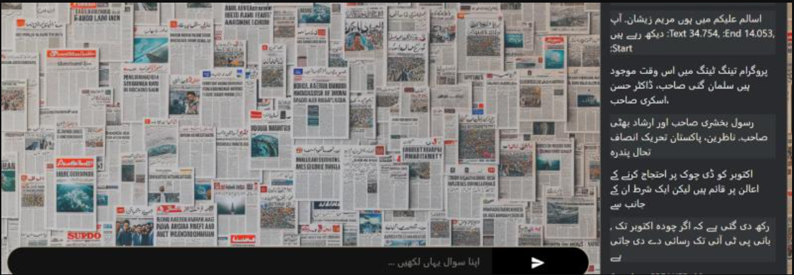

About Me
I am a generative AI engineer with experience in software development, research, and AI model engineering. Currently focused on developing innovative AI solutions and exploring state-of-the-art technologies in the field.
Experience
- Generative AI Engineer at MOSAIC AI LLC since June 2025 - Conducting literature reviews, technical benchmarking, and advanced prompt engineering.
- Led architecture, coding, research, deployment, and documentation for a resume scoring project integrating GCP, cloud orchestration, Firebase, VertexAI, AgentSpace, Google ADK, and Cloud Functions.
- Research Assistant (08/2024 – 04/2025) - Developed code and experimented with models for text-to-speech, text generation, RAG, etc.
- Urdu Talkshow Conversational AI System - Developed LangChain-powered RAG pipeline supporting multilingual interaction, with WhisperX, Llama 3.1, ChromaDB, SQLite, Django backend, and React/Vite frontend.
- Technical Writer at Disruptivera (08/2025 - Present) writing AI/ML enterprise blogs with editorial collaboration.
- AI Engineer at CodAgentic (03/2024 – 04/2025) - Led end-to-end AI/ML, GenAI, NLP, and Computer Vision projects; managed client engagement and project delivery.
- Multi-Agent Health Insurance System - Developed multi-agent chatbot for recommending US health insurance plans using LangChain, LangGraph and Pinecone with dynamic product flow management.
- Autonomous Media Generation via agents with AutoGen; Eleven Labs, Stable Diffusion for audio and image generation.
- Internship at Hydroponics Farm - Developed supervised ML and vision models for plant growth monitoring and disease detection using PyTorch; achieved mAP of 0.91; large-scale dataset annotation via Roboflow.
Projects
 Resume Bank - Resume Scoring Project: Enterprise-grade resume scoring pipeline integrating GCP, Firebase, VertexAI, AgentSpace, Cloud Functions.
Resume Bank - Resume Scoring Project: Enterprise-grade resume scoring pipeline integrating GCP, Firebase, VertexAI, AgentSpace, Cloud Functions.-  Urdu Talkshow Conversational AI System: LangChain-powered RAG pipeline with WhisperX for transcription and Llama for post-processing, fronted by Django and React.
 AI Therapist: Implemented RAG for personalized mental health recommendations using GPT, Gemma, and Llama models with Reddit data.
AI Therapist: Implemented RAG for personalized mental health recommendations using GPT, Gemma, and Llama models with Reddit data. Forest Fire Detection: Wildfire detection system using RESNET-50, YOLOv5/YOLOv8, and U-Net for fire hotspot detection and region analysis.
Forest Fire Detection: Wildfire detection system using RESNET-50, YOLOv5/YOLOv8, and U-Net for fire hotspot detection and region analysis. Multi-Agent Health Insurance System: Multi-agent chatbot system managing dynamic insurance product flows using LangChain and Pinecone.
Multi-Agent Health Insurance System: Multi-agent chatbot system managing dynamic insurance product flows using LangChain and Pinecone. Autonomous Media Generation: Multi-agent system to automate extraction and generation of children story content with AutoGen, Eleven Labs, and Stable Diffusion.
Autonomous Media Generation: Multi-agent system to automate extraction and generation of children story content with AutoGen, Eleven Labs, and Stable Diffusion. Langfuse Observability Architecture: Designed and implemented observability architecture for Langfuse in generative AI contexts.
Langfuse Observability Architecture: Designed and implemented observability architecture for Langfuse in generative AI contexts. Browser Automation Research: Explored Google Project Mariner, Microsoft Copilot Actions, Anthropic Computer Use, Magentic UI, EMA.
Browser Automation Research: Explored Google Project Mariner, Microsoft Copilot Actions, Anthropic Computer Use, Magentic UI, EMA.
Contact
Email: mhd01alii@outlook.com
GitHub: github.com/m01ali